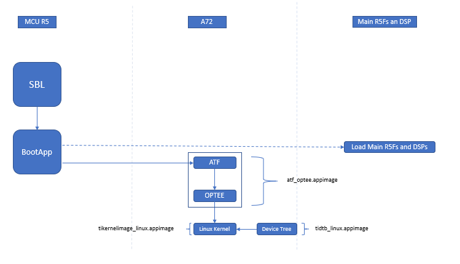

5.4. Boot HLOS¶
SBL supports Real Time and High Level Operating System (HLOS) by running HLOS on A72 cores and firmwares on R5 and DSP cores. Below section describe SBL HLOS boot flow :
5.4.1. HLOS Boot using SBL¶
SBL supports HLOS booting in two ways
Combined Appimage
Tertiary Bootloader (BootApp)
5.4.2. Combined Appimage¶
There are two boot flows supported by SBL for booting Linux on A72.
Development Boot Flow
Optimized Boot Flow
Development Boot Flow
In “Development” boot flow the appimage booted by SBL comprises of ATF + OPTEE + A72 SPL.
SBL boots ATF, from ATF it jumps to OPTEE and then to A72 SPL.
The A72 SPL then loads u-boot.img from boot media and executes u-boot.
By using kernel image present in root partition of SD card, user can boot Kernel image from u-boot.
Along with the U-Boot/Linux, SBL can also boot other RTOS applications on MCU R5F/Main R5F/DSP
Optimized Boot Flow
In “Optimized” boot flow the appimage booted by SBL comprises of ATF + OPTEE + Kernel Image
SBL boots ATF, from ATF it jumps to OPTEE and then to Linux Kernel.
Along with Linux, SBL can also boot other RTOS applications on MCU R5F/Main R5F/DSP
Some Key details to note
The MCU R5F is reset when execution transfers from SBL to MCU R5F custom firmware.
MCU R5F is the last core to be booted in these boot flows as the SBL running on the same core (MCU R5F) has to boot the other cores before it can load the MCU R5F custom firmware on to itself.
ATCM for the MCU R5F is enabled by SBL and hence the MCU R5F custom firmware can use ATCM.
5.4.3. Tertiary Bootloader (BootApp)¶
BootApp is a tertiary bootloader which is booted by secondary bootloader (SBL). It boots Linux on A72 cores and can boot RTOS applications on other main domain cores.
SBL boots BootApp. The BootApp then loads ATF, OPTEE, Device Tree, Kernel to DDR.
BootApp first boots ATF and then to jumps to OPTEE and finally boots Linux Kernel.
Refer BootApp section in SBL user guide for details on how to boot Linux from BootApp
Some Key details to note
The MCU R5F usuall not reset when execution transfers from SBL to Boot App.
MCU R5F is the only core booted by SBL, rest all cores are booted by the Boot Task with in the BootApp
ATCM for the MCU R5F is enabled by SBL and hence the BootApp can use ATCM